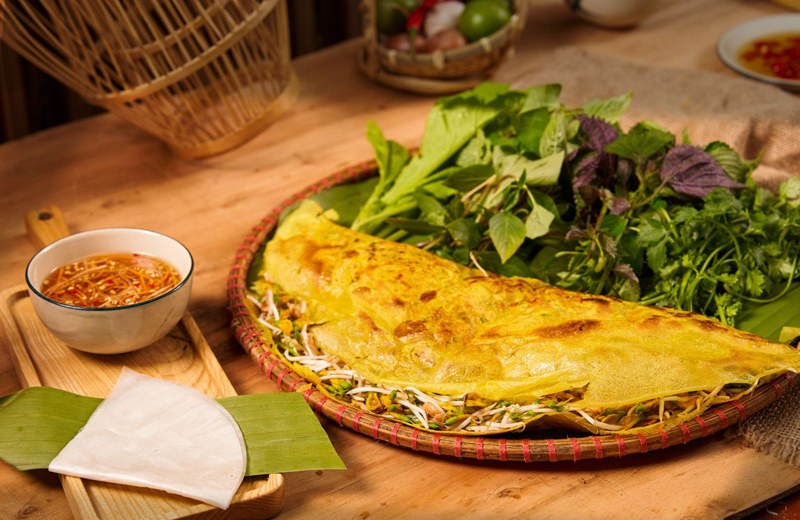

Trang chủ › Chi tiết bài viết

Bánh xèo miền Tây nổi tiếng với vỏ vàng ươm, giòn tan. Bột gạo xay cùng nghệ và nước cốt dừa, đổ vào chảo nóng nghe tiếng "xèo" đặc trưng. Nhân gồm tôm, thịt ba chỉ, giá đỗ, củ sắn; ăn kèm cải xanh, lá cách, rau thơm và chấm nước mắm chua ngọt.
Mẹo: để bột nghỉ 30 phút, chảo thật nóng và đổ bột mỏng tay thì bánh sẽ giòn lâu hơn.